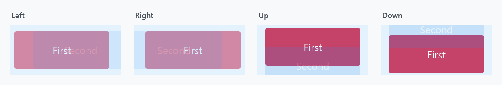
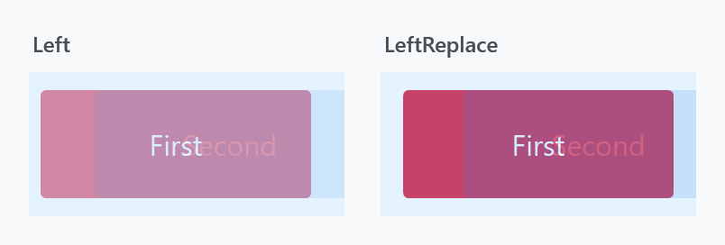

TransitioningContentControl animates between two contents: assign a new Content and the old one is animated out while the new one is animated in. It is a ContentControl, so it holds one child at a time.

<mah:TransitioningContentControl Width="250" Height="250"
Content="{Binding CurrentPage}"
Transition="Left" />
Both contents are only on screen together for the first fraction of a second, which is the moment the figures show: the old one (First) on its way out, the new one (Second) on its way in.
This is the counterpart to MetroContentControl, which animates its own appearance and does not react to a content change at all.
It began as a port of the Silverlight control of the same name.
The transitions
Transition takes a TransitionType, and each value maps to a visual state in the template:
| Value | Visual state | |
|---|---|---|
Default |
DefaultTransition |
the default: a cross-fade over 0.3s, no movement |
Normal |
Normal |
no animation — it only hides the previous presenter, so the swap is instant |
Up / Down |
UpTransition / DownTransition |
slide vertically |
Left / Right |
LeftTransition / RightTransition |
slide horizontally |
LeftReplace / RightReplace |
LeftReplaceTransition / RightReplaceTransition |
see below |
Custom |
whatever CustomVisualStatesName says |
Normal is the one to pick when you want the control's API but none of its animation.

The replace variants are not just a different direction — they are a different idea and a different length:
plain Left |
LeftReplace |
|
|---|---|---|
| new content | fades in over 0.4s, slides 30px over 0.7s | fades in over 0.3s, slides 40px over 0.3s |
| old content | fades out over 0.1s and slides away | fades out over 0.3s, stays put |
So Left moves both layers past each other, while LeftReplace slides the new content over an old one that only dissolves. In the figure above the old content is still strongly coloured on the right, because it is a third of the way through a 0.3s fade rather than half way through a 0.1s one.
Transition is an attached property registered with FrameworkPropertyMetadataOptions.Inherits, so setting it once on a parent applies it to every TransitioningContentControl underneath that has no transition of its own:
<StackPanel mah:TransitioningContentControl.Transition="LeftReplace">
<mah:TransitioningContentControl Content="{Binding First}" />
<mah:TransitioningContentControl Content="{Binding Second}" />
</StackPanel>
In a released version this does not work, in two ways. The property is registered with DependencyProperty.Register rather than RegisterAttached, so the markup above does not compile: MC3015: The attached property 'TransitioningContentControl.Transition' is not defined on 'StackPanel' or one of its base classes. And the default style carries <Setter Property="Transition" Value="Default" />, which beats an inherited value in the precedence order, so even SetValue on a parent leaves every control at Default. Both changed on develop and ship with the next release.
When the content changes again mid-transition
| Property | Type | Default |
|---|---|---|
RestartTransitionOnContentChange |
bool |
False |
The name undersells what it decides. StartTransition reads:
if (!this.IsTransitioning || this.RestartTransitionOnContentChange)
With the default False, a content change arriving while a transition is still running puts the new content into the presenter but does not start the animation again — the running transition simply finishes with the newer content in place. Set it to True and every change restarts the animation from the beginning, which is what you want when content can change faster than 0.7s.
Methods and events
ReloadTransition() |
play the transition again with the same content |
AbortTransition() |
stop the running one immediately |
TransitionCompleted |
raised when the storyboard finishes |
ReloadBehavior.OnSelectedTabChanged replays the transition when a TabControl above the control raises SelectionChanged — see MetroContentControl for the behavior's other attached property.
TransitionCompleted is not a routed event. Despite the RoutedEventHandler signature it is a plain CLR event:
public event RoutedEventHandler TransitionCompleted;
It is raised with Invoke, so it does not bubble and cannot be attached with an EventSetter. Subscribe on the control itself. (ToggleSwitch has the same arrangement for its Toggled event.)
Never write to IsTransitioning. It is registered as an ordinary read/write dependency property, but the control guards it with an internal flag and any write from outside is rejected with a bare exception:
if (!source.allowIsTransitioningPropertyWrite)
{
source.IsTransitioning = (bool)e.OldValue;
throw new InvalidOperationException();
}
There is no message on it, which makes it puzzling to hit. Read it, or bind to it one-way; a two-way binding will throw as soon as the target pushes a value back.
Custom transitions
If none of the built-in states fit, supply your own. Set Transition="Custom", name the state in CustomVisualStatesName, and put the VisualState in CustomVisualStates. The two presenters you animate are named CurrentContentPresentationSite and PreviousContentPresentationSite.
<mah:TransitioningContentControl Width="250" Height="50"
Content="First"
CustomVisualStatesName="CustomTransition"
Transition="Custom">
<mah:TransitioningContentControl.CustomVisualStates>
<VisualState x:Name="CustomTransition">
<Storyboard>
<DoubleAnimationUsingKeyFrames BeginTime="00:00:00"
Storyboard.TargetName="CurrentContentPresentationSite"
Storyboard.TargetProperty="(UIElement.Opacity)">
<SplineDoubleKeyFrame KeyTime="00:00:00" Value="0" />
<SplineDoubleKeyFrame KeyTime="00:00:00.5" Value="0" />
<EasingDoubleKeyFrame KeyTime="00:00:01" Value="1">
<EasingDoubleKeyFrame.EasingFunction>
<SineEase />
</EasingDoubleKeyFrame.EasingFunction>
</EasingDoubleKeyFrame>
</DoubleAnimationUsingKeyFrames>
<DoubleAnimationUsingKeyFrames BeginTime="00:00:00"
Storyboard.TargetName="PreviousContentPresentationSite"
Storyboard.TargetProperty="(UIElement.Opacity)">
<SplineDoubleKeyFrame KeyTime="00:00:00" Value="1" />
<SplineDoubleKeyFrame KeyTime="00:00:00.5" Value="0" />
</DoubleAnimationUsingKeyFrames>
</Storyboard>
</VisualState>
</mah:TransitioningContentControl.CustomVisualStates>
</mah:TransitioningContentControl>
CustomVisualStatesName defaults to "CustomTransition", so the name above can be left out if you use that one.
Get the state name wrong and the transition is simply not applied. A TransitionType whose visual state the template does not have is rejected in a CoerceValueCallback, which keeps the transition the control already had:
var currentTransition = (TransitionType)source.GetValue(TransitionProperty);
return source.GetStoryboard(currentTransition) is not null
? currentTransition
: DefaultTransitionState;
Nothing is thrown and nothing is written back to the property, so a binding on Transition survives a value it cannot use and still delivers the next one from its source. The animation that does not play is the only symptom, which makes a mistyped CustomVisualStatesName the first thing to check.
OnApplyTemplate runs the same coercion, so a transition set before the template was applied is checked as soon as the states are known. A template that has none of the states, DefaultTransition included, leaves the control at Default and without an animation rather than failing.
In a released version this path throws instead. The property changed callback writes the previous transition back over whatever was on the property, a binding included, and throws an ArgumentException whose message is the leftover placeholder Temporary removed exception message. Two transitions that both fail revert each other until the stack overflows. The behaviour above is on develop and ships with the next release.
Related
MetroContentControl for a control that animates its own entrance rather than the change between contents. FlipView uses a TransitioningContentControl internally, which is where its LeftTransition and friends come from.